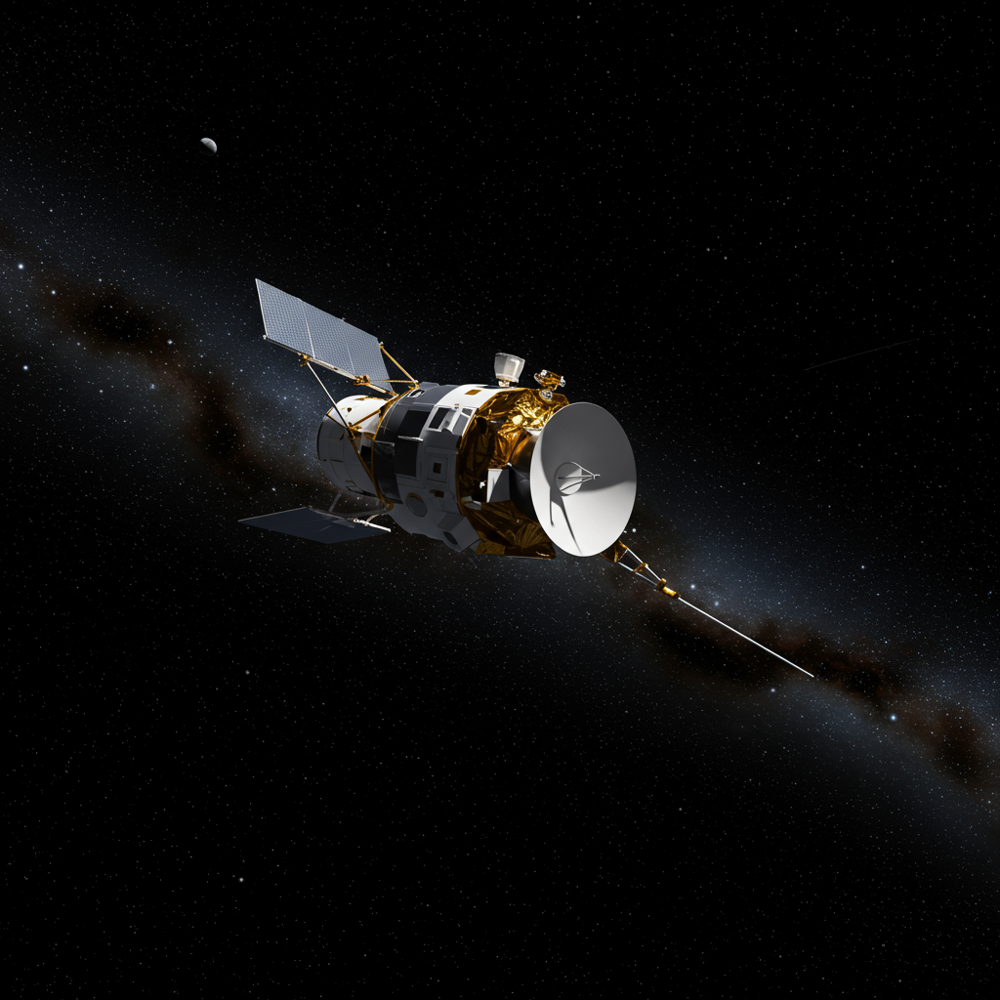

Sonda Ulysses
Agencias: NASA / ESA
Fecha de lanzamiento: 6 de octubre de 1990
Duración: 18 años (finalizó en junio de 2009)
Tipo de misión: Exploración solar de polos heliográficos
Trayectoria: Asistencia gravitacional con Júpiter para salir del plano eclíptico
Instrumentos: Magnetómetro, espectrómetros de viento solar, detectores de partículas y polvo cósmico, antena de plasma
Origen del nombre
Ulysses toma su nombre del legendario **Ulises**, héroe griego de la Odisea de Homero, conocido por sus extensos y arriesgados viajes por lo desconocido, enfrentando monstruos, tormentas y misterios mitológicos. En este caso, la sonda fue bautizada así porque:
- No fue dirigida a un planeta o luna específica.
- Viajó hacia los polos del Sol, un territorio inexplorado hasta ese momento.
- Se desvió del plano eclíptico (como Ulises desviándose del camino a casa), usando el tirón gravitacional de Júpiter para elevar su trayectoria por encima del Sol y observarlo desde un ángulo completamente nuevo.
Impacto histórico
Ulysses fue la primera y única misión en observar el Sol desde sus polos. Estudió el viento solar, los campos magnéticos y la heliosfera en tres dimensiones, revolucionando nuestra comprensión del comportamiento solar a gran escala. La nave realizó tres órbitas solares completas, recopilando datos vitales durante más de 18 años. Ulysses abrió una nueva perspectiva del Sol, lejos del enfoque exclusivamente ecuatorial de las misiones anteriores.